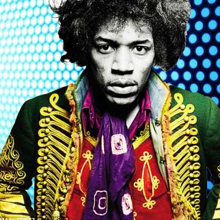
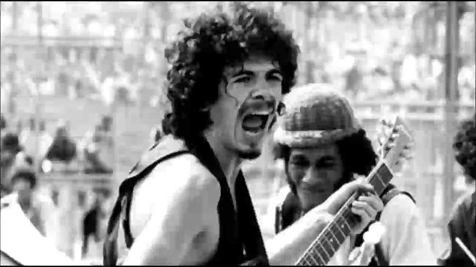
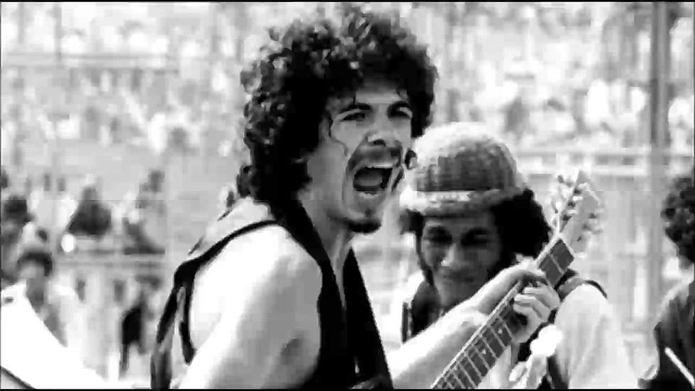

Music of the 1960's

Jimi Hendrix was one of the most influential Rock and Roll artists of the 1960's. While his career spanned less than five years, his impact on the culture of Rock and Roll left a legacy. Photographs strive to perpetuate his bombastic style and mystic skills on the guitar. As a Washingtonian myself, I feel the influence of Hendrix when I enter the little record store I used to frequent. Perhaps the most encapsulating experience I recall is watching old video of his performance at Woodstock, playing the National Anthem and seemingly bringing together a gargantuan crowd of starving, inebriated hippies. (Photo Citation- Jimi Hendrix. https://www.visitclarksvilletn.com/plan/clarksville-connections/celebrities/jimi-hendrix/. Accessed 21 Mar. 2021.
)
 

Santana was another influential Rock and Roll group of the 1960's lead by the incredible Carlos Santana. In a documentary produced by Netflix titled "Woodstock", Carlos Santana speaks about his drug-influenced performance at Woodstock. The group was the first Mexican-American band to hit the mainstream in the 1960's. Their voltaic style lead by Carlos' animated character on stage rendered the performance at Woodstock a hit. Carlos recalls tripping on acid during that performance, and if you watch the footage today, you may feel like you are tripping as well.
(Photo Citation-Santana Woodstock - Google Search. https://www.google.com/search?q=santana+woodstock&tbm=isch&ved=2ahUKEwivhY7lkcLvAhVyJ30KHZs2AmAQ2-cCegQIABAA&oq=santana+woodstock&gs_lcp=CgNpbWcQAzICCAAyAggAMgIIADICCAAyAggAMgIIADICCAAyAggAMgIIADoHCAAQsQMQQzoECAAQQzoFCAAQsQM6BggAEAoQGFCvOlimU2DFVGgDcAB4AIABggGIAYYJkgEEMTEuMpgBAKABAaoBC2d3cy13aXotaW1nwAEB&sclient=img&ei=A6FXYO_3LfLO9AOb7YiABg#imgrc=HKUMUq6Xbc_SrM. Accessed 21 Mar. 2021.)
)